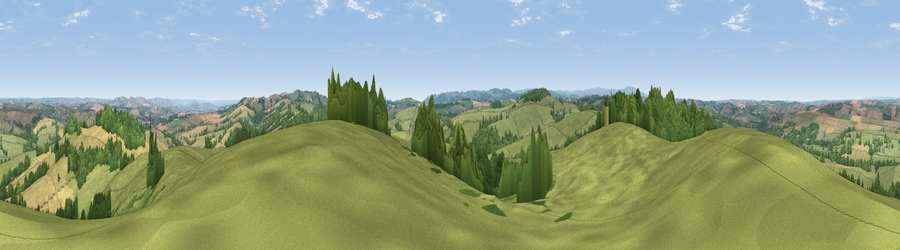

Viewpoint near Venny Tedburn
#5344 in England · top 6% of its area beats it · near Venny Tedburn · access?Where it is
The exact computed spot (SX 80788 97275). Click the marker for map links.
Public access: no public right of way or access land is recorded at this exact spot — it may be on private land. Computed from Natural England's CRoW access layer and OpenStreetMap rights of way — not the legal definitive map. Always verify locally.
The view, rendered

A 360° render of this exact spot computed from the terrain model, tree cover and land cover — summer colours, afternoon light, calibrated against photographs of famous viewpoints. Real trees, hedges and buildings will differ in detail.
The panorama
Grey silhouette: terrain skyline in each direction (720 bearings, Earth curvature and refraction included). Dashed green: skyline with trees (+15 m) and buildings (+8 m) as obstacles. Blue strip: how far the ground is visible on each bearing.
Where the view opens
Wedge length = distance to the farthest visible ground on that bearing (vegetation-aware). Rings at 10, 25 and 50 km.
What fills the view
51% grassland · 33% woodland · 16% cropland
Angular shares of the visible panorama (visual magnitude), not map area. Landscape diversity 0.45 (0–1 Shannon).
Key numbers
More beautiful places nearby
The staircase of upgrades: each row has a higher view potential than everything closer. Driving times are estimates from straight-line distance, calibrated against real road routing — check an actual route before setting out.
| Place | Direction | Drive | Score |
|---|---|---|---|
| Viewpoint near Pathfinder Village | ESE · 4 km | ~9 min | 71.0 |
| Viewpoint near Whitestone | ESE · 6 km | ~13 min | 75.1 |
| Viewpoint near Whitestone | ESE · 6 km | ~13 min | 79.8 |
| Viewpoint near Kenn | SE · 17 km | ~30 min | 80.0 |
| Viewpoint near Haytor Vale | S · 20 km | ~33 min | 80.1 |
| Viewpoint near Kenton | SE · 20 km | ~34 min | 80.7 |
| Viewpoint near Kenton | SE · 20 km | ~34 min | 82.9 |
| Viewpoint near Holcombe | SSE · 26 km | ~41 min | 83.3 |
50.76278, -3.69168 · source: screening · position refined by local search. Computed location — check access rights before visiting.